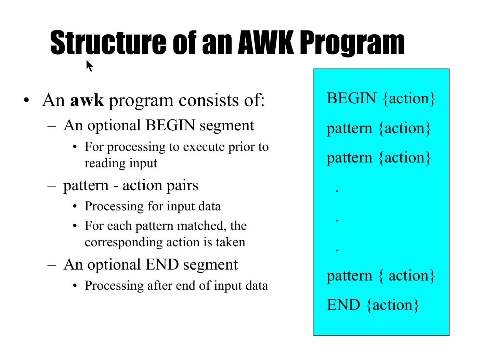
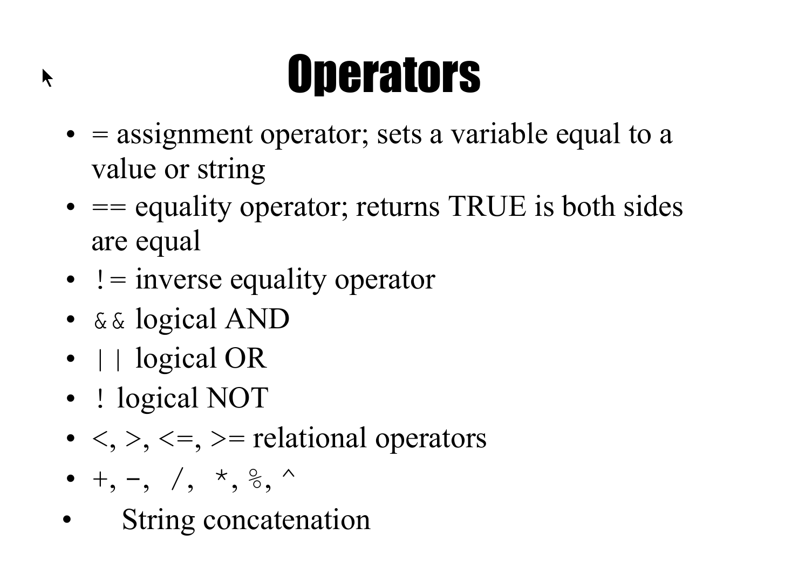

awk 是一种强大的文本处理工具，它可以在文件或输入流中搜索和解析文本。awk 最初设计用于处理文本数据，特别是格式化的报告。它可以对数据进行筛选、排序、统计、格式化等操作，并且可以根据指定的规则对数据进行复杂的文本处理。
awk is a pattern-action language, like sed

awk的执行过程如下： 首先在读取输入之前执行BEGIN块，然后依次读取record,默认是按照行读取，对读取的行依次匹配模式-动作块，如果模式匹配，则执行相应的动作。直到所有的模式-动作块匹配完毕。然后再读取下一行处理。直到所有数据读取完毕，执行END块。 模式-动作块中，如果模式省略，则模式默认匹配所有的行。
在 awk 中，如果某行数据匹配多个模式-动作对，那么在执行第二个匹配的动作时，是在被第一个匹配动作更改后的行数据上执行的。这是因为 awk 的动作可能会修改当前行的字段或变量，这些修改会在当前行的所有动作执行完毕之前持续有效。
例如，假设我们有两个模式-动作对，第一个模式动作将第二个字段乘以 2，第二个模式动作打印第二个字段：
$2 > 10 {$2 = $2 * 2 }$2 > 20 { print $2 }
如果某一行数据的第二个字段值为 15，那么这行数据会先匹配第一个模式，字段值将被修改为 30。然后，awk 继续检查第二个模式，由于修改后的字段值 30 大于 20，第二个模式也会匹配，因此会打印出 30。
需要注意的是，awk 中的动作是按照它们在脚本中出现的顺序执行的，而且每行的动作执行完成后，awk 不会回滚任何更改。这意味着一旦一个动作修改了字段或变量，这些修改将对后续的动作可见。如果需要保留原始数据的副本以供后续动作使用，可以在修改之前将原始数据保存到其他变量中。
pattern部分可以是
- 正则表达式：awk 使用正则表达式作为模式来匹配行的内容。例如，
/foo/会匹配任何包含 “foo” 的行。 - 关系表达式：可以使用关系运算符（如 >, ==, <, >=, <=, !=）来比较字段值或变量。例如，
$1 > 100会匹配第一个字段大于 100 的行。 - 组合模式：可以使用逻辑运算符（如 && 表示逻辑与，|| 表示逻辑或）来组合多个条件。例如，
$1 > 10 &&$2 < 20会匹配第一个字段大于 10 且第二个字段小于 20 的行。 - 表达式模式：任何计算结果为数值的表达式都可以作为模式。在 awk 中，非零值被视为真，零值被视为假。因此，表达式 expression 等价于 expression != 0。
如果模式缺失，则为默认模式，匹配所有的记录
# 匹配第一个字段等于 "foo" 的行
$1 == "foo" { print $0 }
# 匹配第一个字段以 "bar" 开头的行
$1 ~ /^bar/ { print $1 }
# 匹配第一个字段大于 10 且第二个字段小于 20 的行
$1 > 10 &&$2 < 20 { print $1,$2 }
# 匹配第一个字段以 "bar" 开头的行
$1 ~ /^bar/ { print $0 }
# 匹配第一个字段包含 "foo" 的行
$1 ~ /foo/ { print $0 }
# 匹配第一个字段以数字结尾的行
$1 ~ /[0-9]$/ { print $0 }
#匹配10-20行
NR >= 10 && NR <= 20 {print $0}
- action may include a list of one or more C like statements, as well as arithmetic and string expressions and assignments and multiple output streams.
action is performed on every line that matches pattern.If pattern is not provided, action is performed on every input line
Actions must be enclosed in braces to distinguish them from pattern.
root@sypc:~/shell# ls | awk ' BEGIN { print "List of bash files:" }/\.bash$/{print $0}
END { print "There you go!" }'
List of bash files:
1.bash
10.bash
11.bash
2.bash
3.bash
4.bash
5.bash
6.bash
7.bash
8.bash
9.bash
There you go!
一个动作块中的多个动作用;分隔
root@sypc:~/shell# ls | awk ' BEGIN { print "List of bash files:" }/\.bash$/{print;print $0} END { print "There you go!" }'
List of bash files:
1.bash
1.bash
10.bash
10.bash
11.bash
11.bash
2.bash
2.bash
3.bash
3.bash
4.bash
4.bash
5.bash
5.bash
6.bash
6.bash
7.bash
7.bash
8.bash
8.bash
9.bash
9.bash
There you go!
awk scripts can define and use variables
BEGIN { sum = 0 }
{ sum ++ }
END { print sum }
Some variables are predefined
Default record separator is newline
– By default, awk processes its input a line at a time.
• RS: record separator
• Could be any other regular expression.
– Can be changed in BEGIN action
NR is the variable whose value is the number of the current record.
Each input line is split into fields.
– FS: field separator: default is whitespace (1 or more spaces or tabs)
– awk -F c option sets FS to the character c
• Can also be changed in BEGIN
– $0 is the entire line
– $1 is the first field, $2 is the second field, ….
• Only fields begin with $, variables are unadorned
• Printing Certain Fields
– Multiple items can be printed on the same output line with a single print statement
– { print $1, $3 }
– Expressions separated by a comma are, by default, separated by a single space when printed (OFS)
– 如果print的参数没有用逗号分隔，则连续输出
NF, the Number of Fields
– Any valid expression can be used after a $ to indicate the contents of a particular field
– One built-in expression is NF, or Number of Fields
– { print NF, $1, $NF } will print the number of fields, the first field, and the last field in the current record
– { print $(NF-2) } prints the third to last field
– You can also do computations on the field values and include the results in your output
– { print $1, $2 * $3 }
– The built-in variable NR can be used to print line numbers
– { print NR, $0 }will print each line prefixed with its line number
– You can also add other text to the output besides what is in the current record
– { print "total pay for", $1, "is", $2 * $3 }
– Note that the inserted text needs to be surrounded by double quotes
– Like C, Awk has a printf function for producing formatted output
– printf has the form printf( format, val1, val2, val3, … )
{ printf(“total pay for %s is $%.2f\n”, $1, $2 * $3) }
– When using printf, formatting is under your control so no automatic spaces or newlines are provided by awk.
You have to insert them yourself.
{ printf(“%-8s %6.2f\n”, $1, $2 * $3 ) }
预定义的变量有：
• Field $0, $1, $2, $NF
• NR - Number of current record
• FNR - The Number of current record relative to the current input file
• NF - Number of fields in current record
• FILENAME - name of current input file
• FS - Field separator, space or TAB by default
• OFS - Output field separator, space by default
• RS - The Record Separator Variable, newline by default
• ORS - The Output Record Separator Variable, newline by default
• ARGC/ARGV - Argument Count, Argument value array
• ENVIRON - Array of Environment Variables
• IGNORECASE - Ignore case in all string comparisons
• SUBSEP - The array subscript separator
• OFMT - The output format for numbers, default is "%.6g"(This is a format specifier for floating-point numbers. The g stands for general format. .6 means up to 6 significant figures will be printed.)
examples:
root@sypc:~/shell# echo -e "File1:\nline1\nline2\nline3" > file1.txt
echo -e "File2:\nline1\nline2\nline3" > file2.txt
awk '{ print "FNR="FNR, "NR="NR, $0 }' file1.txt file2.txt
FNR=1 NR=1 File1:
FNR=2 NR=2 line1
FNR=3 NR=3 line2
FNR=4 NR=4 line3
FNR=1 NR=5 File2:
FNR=2 NR=6 line1
FNR=3 NR=7 line2
FNR=4 NR=8 line3
root@sypc:~/shell# awk 'BEGIN { for(i = 0; i < ARGC; i++) print ARGV[i] }' arg1 arg2 arg3
awk
arg1
arg2
arg3
root@sypc:~/shell# awk 'BEGIN { print ENVIRON["PATH"] }'
/root/.vscode-server/bin/0ee08df0cf4527e40edc9aa28f4b5bd38bbff2b2/bin/remote-cli:/usr/local/sbin:......
root@sypc:~/shell# echo -e "Line1\nline2" | awk 'BEGIN{IGNORECASE=1} /line1/ {print $0}'
Line1
root@sypc:~/shell# echo -e "Line1\nline2" | awk ' /line1/ {print $0}'
root@sypc:~/shell# awk 'BEGIN { OFMT = "%.2f"; print 1/3 }'
0.33
root@sypc:~/shell# awk 'BEGIN { print 1/3 }'
0.333333
root@sypc:~/shell# awk 'BEGIN { a["1","2"] = "test"; print a["1","2"] }'
test
root@sypc:~/shell# awk 'BEGIN { SUBSEP = "-"; a["1","2"] = "test"; print a["1-2"] }'
test
taria@DESKTOP-SDMPT9S:~$ awk 'BEGIN { a[1] = "test"; print a[1] }'
test
taria@DESKTOP-SDMPT9S:~$ awk 'BEGIN { a[1,2] = "test"; print a[1,2] }'
test
taria@DESKTOP-SDMPT9S:~$ awk 'BEGIN { SUBSEP="-"; a[1,2] = "test"; print a[1,2] }'
test
aria@DESKTOP-SDMPT9S:~$ awk 'BEGIN { SUBSEP="-"; a[1,2] = "test"; print a["1","2"] }'
test
taria@DESKTOP-SDMPT9S:~$ awk 'BEGIN { SUBSEP="-"; a[1,2] = "test"; print a["1-2"] }'
test
In AWK, there are no true multi-dimensional arrays. Instead, AWK simulates multi-dimensional arrays by concatenating the indices with a special character (the value of SUBSEP), forming a single string that is used as an index in a one-dimensional array.
So when you write a["1","2"], AWK is actually treating it as a one-dimensional array with an index of "1\0342" (where \034(28 for decimal) is the SUBSEP character). This doesn't correspond to a row and column as in a traditional two-dimensional array. Instead, it's just a way to create compound keys for array entries.
也就是说，awk数组的下表其实是字符串。 multi-dimensional 数组的下表也是字符串
taria@DESKTOP-SDMPT9S:~$ awk 'BEGIN { a["hello"] = "test"; print a["hello"] }'
test
taria@DESKTOP-SDMPT9S:~$ awk 'BEGIN { a['c'] = "test"; print a['c'] }'
test
taria@DESKTOP-SDMPT9S:~$ awk 'BEGIN { a[1] = "test"; print a['1'] }'
test
awk可以自定义变量，不需要声明类型 awk variables take on numeric (floating point) or string values according to context.
• User-defined variables are unadorned (they need not be declared). • By default, user-defined variables are initialized to the null string which has numerical value 0.
Counting is easy to do with Awk
$3 > 15 { emp = emp + 1}
END { print emp, “employees worked more than 15 hrs”}
Computing Sums and Averages is also simple
{ pay = pay + $2 * $3 }
END { print NR, “employees”
print “total pay is”, pay
print “average pay is”, pay/NR
}
root@sypc:~/shell# echo -e "lily 10 20\nlucy 20 30" | awk '{ pay = pay + $2 * $3 }
END { print NR, "employees"
print "total pay is", pay
print "average pay is", pay/NR
}'
2 employees
total pay is 800
average pay is 400
注意如果print的元素不用逗号分隔，则元素之间不会添加OFS,此时应该是字符串拼接
root@sypc:~/shell# echo -e "lily 10 20\nlucy 20 30" | awk '{ pay = pay + $2 * $3 }
END { print NR, "employees";print "total pay is", pay;
print "averagepay"pay/NR}'
2 employees
total pay is 800
averagepay400 #没有空格
变量的类型是awk根据上下文自己决定的，我们直接使用即可
root@sypc:~/shell# echo -e "lily 200\nlucy 150\nlinda 300" | awk '$2 > maxrate { maxrate = $2; maxemp = $1 }END { print "highest hourly rate:",maxrate, "for" ,maxemp } '
highest hourly rate: 300 for linda
String Concatenation – New strings can be created by combining old ones { names = names $1 " " } END { print names }
root@sypc:~/shell# echo -e "lily 200\nlucy 150\nlinda 300" | awk '{names=names $1}END{print names}'
lilylucylinda
root@sypc:~/shell# echo -e "lily 200\nlucy 150\nlinda 300" | awk '{names=names $1 " "}E
ND{print names}'
lily lucy linda
空格是没有的，需要自己加
• Printing the Last Input Line
– Although NR retains its value after the last input line has been read, $0 does not
{ last = $0 }END { print last }
awk provides several control flow statements for making decisions and writing loops • If-Then-Else
root@sypc:~/shell# echo -e "lily 200\nlucy 150\nlinda 300" | awk '$2 > 6 { n = n + 1; pay = pay + $2 }
END { if (n > 0) print n, "employees, total pay is",pay, "average pay is", pay/n; else print "no employees are paid more than $6/hour" }'
3 employees, total pay is 650 average pay is 216.667
while
{ i = 1 while (i <= $3) { printf(“\t%.2f\n”, $1 * (1 + $2) ^ i) i = i + 1 } }Do-while
do { statement1 } while (expression)
root@sypc:~/shell# awk 'BEGIN {
i = 1;
do {
print "i is " i;
i++;
} while (i <= 5)
}'
i is 1
i is 2
i is 3
i is 4
i is 5
- For-loop
{ for (i = 1; i <= $3; i = i + 1) printf("\t%.2f\n", $1 * (1 + $2) ^ i) }
awk还提供了array使用
- array elements are not declared
- Array subscripts can have any value: – Numbers – Strings • Examples – arr[3]="value" – grade["Mohri"]=40.3
# reverse - print input in reverse order by line
{ line[NR] = $0 } # remember each line
END {
for (i=NR; i > 0; i=i-1) {
print line[i]
}
}
for loop to read associative array
– for (v in array) { … }
– Assigns to v each subscript of array (unordered)
– Element is array[v]
root@sypc:~/shell# awk 'BEGIN {
a["1", "2"] = "test1";
a["3", "4"] = "test2";
a["5", "6"] = "test3";
for (i in a) {
print "Index: " i ", Value: " a[i];
}
}'
Index: 56, Value: test3
Index: 34, Value: test2
Index: 12, Value: test1
AWK has a wide range of built-in functions for string manipulation, numeric computation, and array handling. Here are some of them:
String Functions:
gsub(regexp, replacement [, target]) - Globally replaces the portion of the string that matches regexp with replacement in the target string.
sub(regexp, replacement [, target]) - Same as gsub(), but only the first match is replaced.
index(string, substring) - Returns the position where substring starts in string.
length(string) - Returns the length of string.
split(string, array [, separator]) - Splits string into pieces separated by separator and stores the pieces in array.
sprintf(format, expression, ...) - Returns a string formatted by the usual printf conventions of the C library function sprintf.
substr(string, start [, length]) - Returns a length-character-long substring of string, starting at character number start.
root@sypc:~/shell# echo "hello world" | awk '{ gsub(/o/, "0"); print $0 }'
hell0 w0rld
root@sypc:~/shell# echo "hello world" | awk '{ sub(/o/, "0"); print $0 }'
hell0 world
root@sypc:~/shell# echo "hello world" | awk '{ print index($0, "world") }'
7
root@sypc:~/shell# echo "hello world" | awk '{ print length($0) }'
11
root@sypc:~/shell# echo "hello world" | awk '{ split($0, array, " "); print array[1] }'
hello
root@sypc:~/shell# echo "hello world" | awk '{ split($0, array, " "); print array[2] }'
world
root@sypc:~/shell# echo "hello world" | awk '{ printf("%s\n", toupper($0)) }'
HELLO WORLD
root@sypc:~/shell# echo "hello world" | awk '{ print substr($0, 1, 5) }'
hello
{ nc = nc + length($0) + 1 #length不会包括最后的RS(newline)符号
nw = nw + NF
}
END { print NR, "lines,", nw, "words,", nc, "characters" }
root@sypc:~/shell# awk 'BEGIN{print substr("hello",2,2)}'
el
Numeric Functions:
atan2(y, x) - Returns the arctangent of y/x in radians.
cos(x) - Returns the cosine of x, where x is in radians.
sin(x) - Returns the sine of x, where x is in radians.
sqrt(x) - Returns the square root of x.
exp(x) - Returns the exponential of x.
int(x) - Truncates x to an integer.
log(x) - Returns the natural logarithm of x.
rand() - Returns a random number n, between 0 and 1, such that 0 <= n < 1.
srand([x]) - Sets the seed value for rand() to x.
Array Functions:
asort(array [, dest [, how] ]) - Sorts the contents of array in ascending order.
asorti(array [, dest [, how] ]) - Sorts the indices of array in ascending order.
length(array) - Returns the number of elements in array.
Special functions
system(command): This function executes the command that is passed as an argument and returns the exit status.
root@sypc:~/shell# awk 'BEGIN { print system("ls") }'
1.bash 2.bash 5.bash 8.bash file1.txt pipe1.text sort.text test.log
10.bash 3.bash 6.bash 9.bash file2.txt pipe2.text sort2.text
11.bash 4.bash 7.bash colon.text pipe.text pipe3.text tab.text
0
In this example, the ls command is executed, and its exit status is printed.
exit [expression]: This function causes AWK to stop processing and exit immediately. If the optional expression is provided, its value is used as the exit status.
root@sypc:~/shell# echo -e "line1\nline2" | awk '{ print $0; if (NR == 1) exit }'
line1
In this example, AWK stops processing and exits after printing the first line.
next: When this command is encountered, AWK immediately stops processing the current record and goes on to the next record.
root@sypc:~/shell# echo -e "line1\nline2" | awk '{ if (NR == 1) next; print $0 }'
line2
还有很多其他的函数，具体见说明
